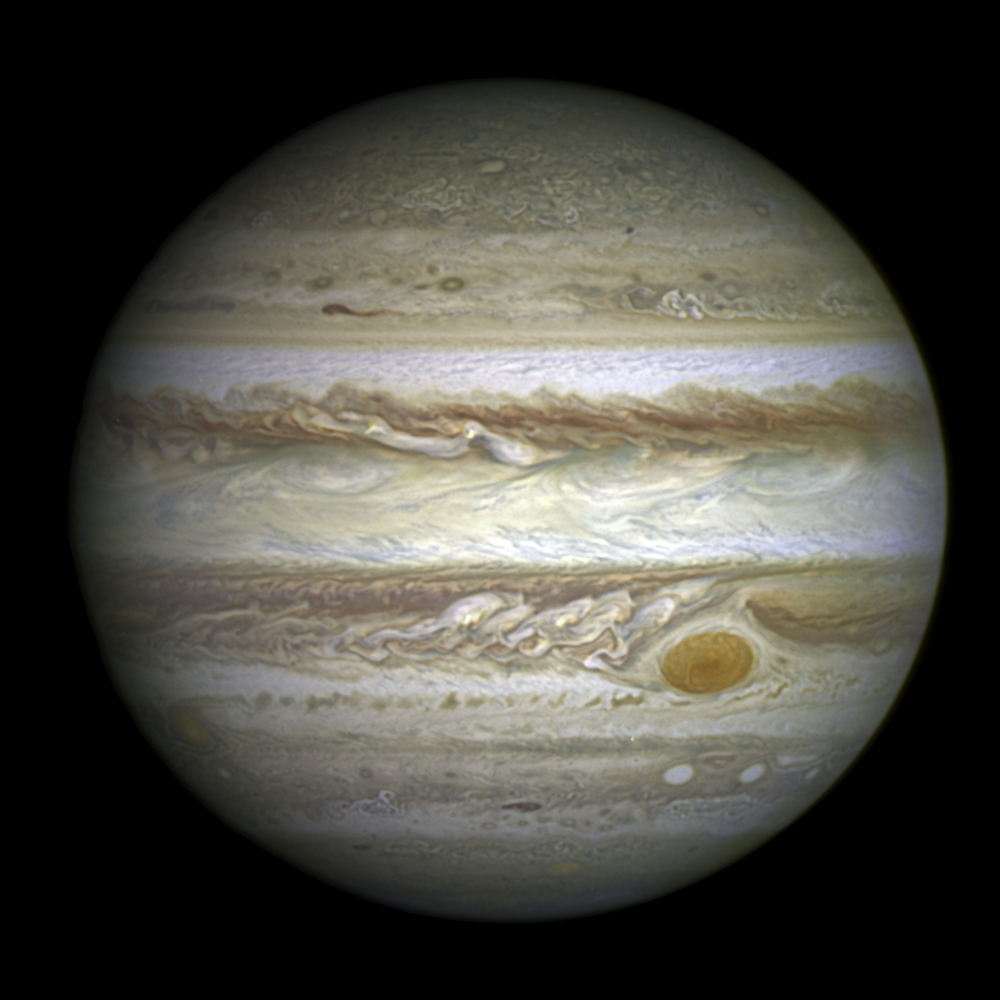

| Earth | Mars | Jupiter | Saturn | |
|---|---|---|---|---|
| Images of Planets | |
|
 | |
| Fact #1: Equatorial Radius | 6378.137 km | 3396.2 km | 71,492 km | 60,268 km |
| Fact #2: Polar Radius | 6356.752 km | 3376.2 km | 66,854 km | 54,364 km |
| Fact #3: Black-Body Temperature | 254.0 K | 209.8 K | 109.9 K | 81.0 K |
| Fact #4: Number of Natural Satellites | 1 | 2 | 95 | 146 |
| Fact #5: Volumetric Mean Radius | 6371.0 km | 3389.5 km | 69,911 km | 58,232 km |
| Fact #6: Planetary Ring System | No | No | Yes | Yes |
| Fact #7: Bond Albedo | 0.294 | 0.250 | 0.343 | 0.342 |